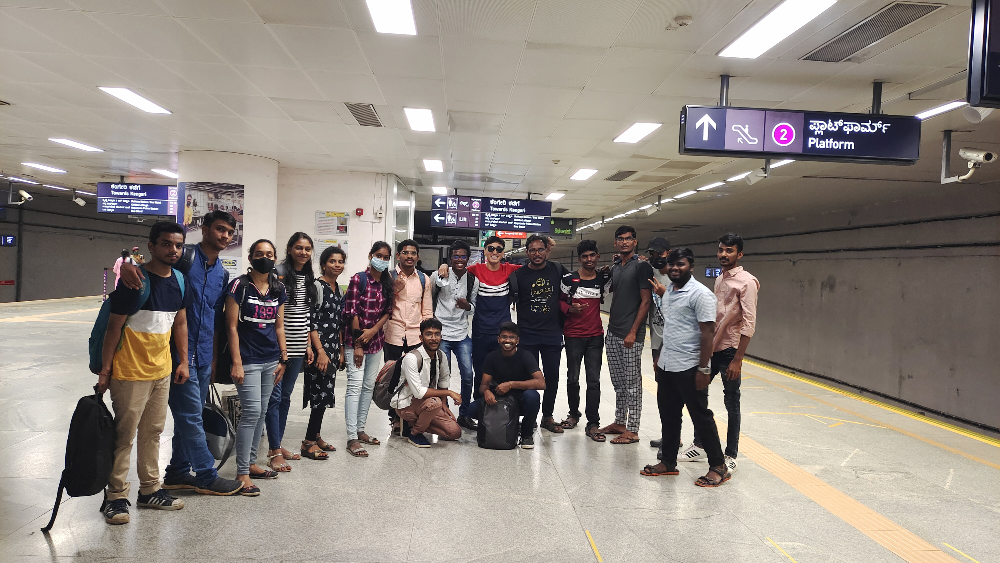
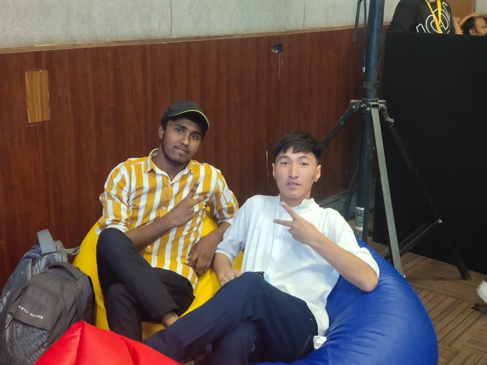
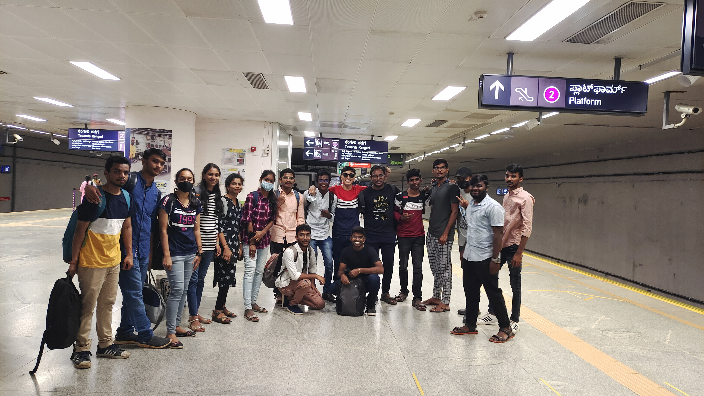
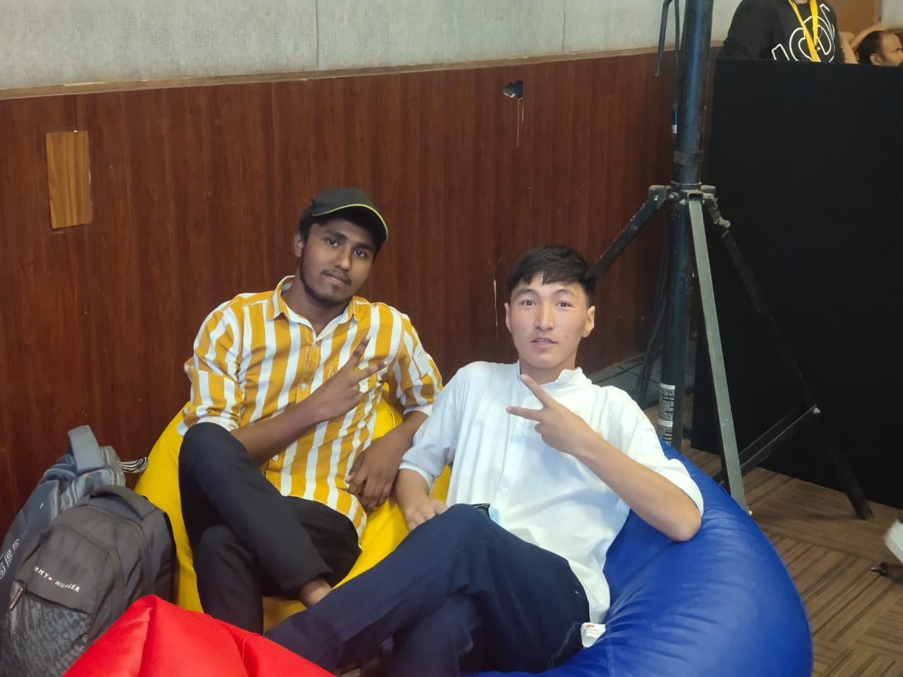
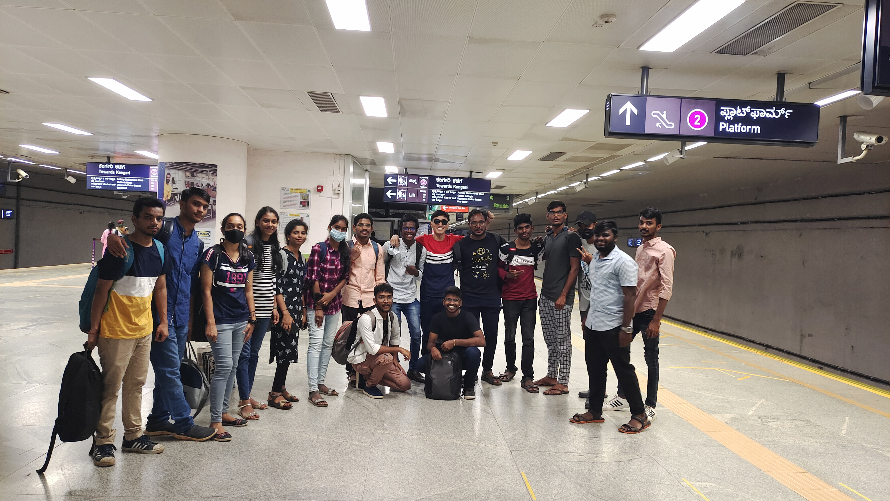
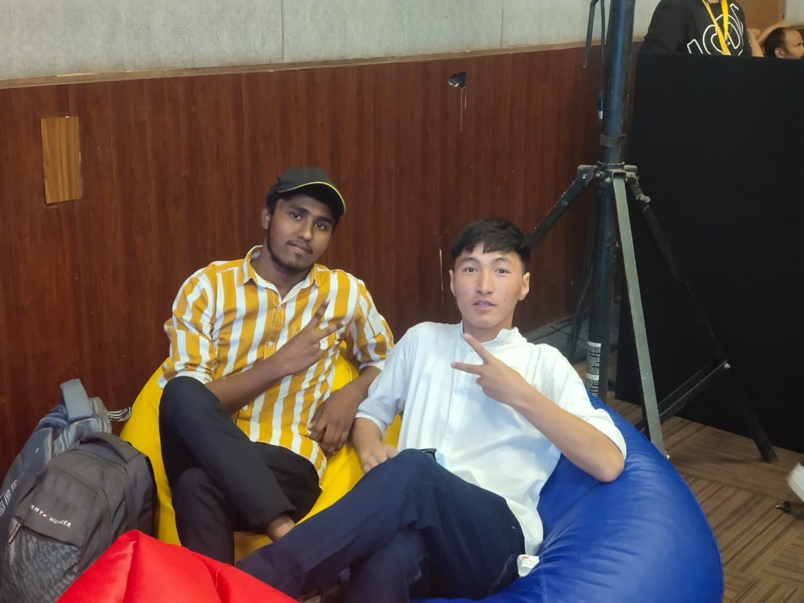

PORTFOLIO
 




This is Rigzen Namgail from eastern Ladakh near to the border of China. And I do study at JNTUA of Andhra Pardesh, currently I am doing B.tech in Computer Science as 3rd year in this college. Well I must include my schooling here, I did my both matriculation and post matric from Govt Hr. Sec. School Nyoma (GHSS NYOMA). My dream is to open a school in which a student from 6 year old could come and 60 year old man/women can also come and study. I gave my first intrance as NDA but I was rejected there after that I choose B.tech and now I am preparing for CDS. As these is my project for social welfare I am trying to help my junior about there carrer and want to show them right way. May be I am not that much experienced but what i got in these 2 year after school must be shared with them I believe. Also may be some of you guys might inspired. I have a little request to you people who are liking the way I am doing my work and sharing the views to all taht plz give a feedback in the table below even you dont want to know about computer Languages but for sure give a responce in your own Language too. THANK YOU!!


Hey everybody computer Languages is a Language which will let the computer understand the human input and its instruction and the computer will process the work and give the output. I will tell following Languages: 1. Python 2. C 3. Java 4. R Languages 5. HTML/ CSS
As a student i believe that carrer option selection is very tough for any student doing schooling so I am here to tell you how to select your carrer. Well this following streams I know well and I can guuide for you guys. I will explain about following stream carrer: 1. Arts/Humanities 2. Non-Medical 3. Medical 4. commerce
Any marketing that uses electronic devices and can be used by marketing specialists to convey promotional messaging and measure its impact through your customer journey. It include social media and web-based advertising, mostly the digital marketing will let you all know about how to promote a brand or connect people for with you easier.